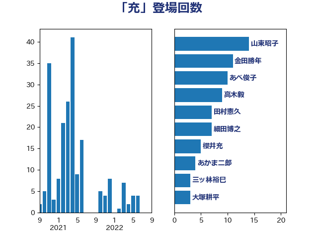

単語「充」

| 山東昭子 | 自由民主党 | 14 回 |
| 金田勝年 | 自由民主党 | 11 回 |
| あべ俊子 | 自由民主党 | 10 回 |
| 高木毅 | 自由民主党 | 9 回 |
| 田村憲久 | 自由民主党 | 7 回 |
| 細田博之 | 自由民主党 | 7 回 |
| 櫻井充 | 自由民主党 | 5 回 |
| あかま二郎 | 自由民主党 | 4 回 |
| 三ッ林裕巳 | 自由民主党 | 3 回 |
| 大塚耕平 | 国民民主党 | 3 回 |
| 山口俊一 | 自由民主党 | 3 回 |
| 山本順三 | 自由民主党 | 3 回 |
| 茂木敏充 | 自由民主党 | 3 回 |
| 豊田俊郎 | 自由民主党 | 3 回 |
| 井上哲士 | 日本共産党 | 2 回 |
| 佐藤信秋 | 自由民主党 | 2 回 |
| 城内実 | 自由民主党 | 2 回 |
| 村井英樹 | 自由民主党 | 2 回 |
| 浅田均 | 日本維新の会 | 2 回 |
| 赤羽一嘉 | 公明党 | 2 回 |
| 上川陽子 | 自由民主党 | 1 回 |
| 中根一幸 | 自由民主党 | 1 回 |
| 加藤勝信 | 自由民主党 | 1 回 |
| 室井邦彦 | 日本維新の会 | 1 回 |
| 小泉進次郎 | 自由民主党 | 1 回 |
| 小熊慎司 | 立憲民主党 | 1 回 |
| 小西洋之 | 立憲民主党 | 1 回 |
| 山田宏 | 自由民主党 | 1 回 |
| 岸信夫 | 自由民主党 | 1 回 |
| 岸田文雄 | 自由民主党 | 1 回 |
| 打越さく良 | 立憲民主党 | 1 回 |
| 木原誠二 | 自由民主党 | 1 回 |
| 杉本和巳 | 日本維新の会 | 1 回 |
| 東徹 | 日本維新の会 | 1 回 |
| 森屋宏 | 自由民主党 | 1 回 |
| 橋本岳 | 自由民主党 | 1 回 |
| 橋本聖子 | 無所属 | 1 回 |
| 浦野靖人 | 日本維新の会 | 1 回 |
| 海江田万里 | 立憲民主党 | 1 回 |
| 渡辺創 | 立憲民主党 | 1 回 |
| 田嶋要 | 立憲民主党 | 1 回 |
| 篠原豪 | 立憲民主党 | 1 回 |
| 紙智子 | 日本共産党 | 1 回 |
| 菅義偉 | 自由民主党 | 1 回 |
| 赤澤亮正 | 自由民主党 | 1 回 |